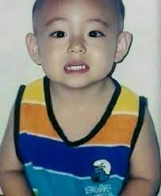
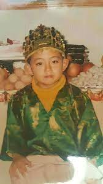

Kim Taehyung
Kim Taehyung yang mempunyai nama panggung V adalah salah satu member Bangtan Soeyondan atau BTS.Pria kelahiran Daegu,30 Desember 1995.Berzodiak Capricon.Selain menjadi seorang idol,Taehyung ini juga seorang aktor.Drama Korea yang pernah dibintangi olehnya yaitu Hwarang.

